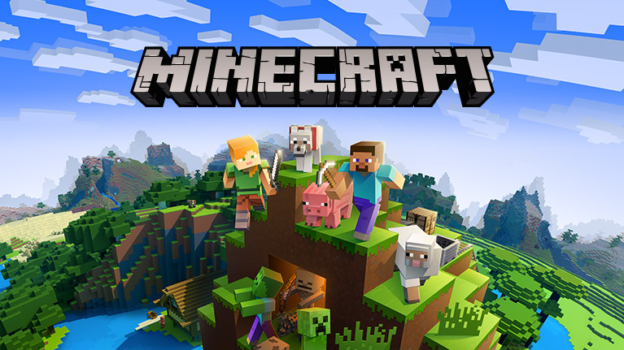

Aryaman's Favourite Games
- FORTNITE
Fortnite's all about players who are dropped out of an airbus in to a map where they have to fight to win!! There are hundred players in the game. This game has cartoonish graphics and characters and might not be the game for hardcore gamers.
Advantages: Fun to play even for an amateur player, short matches
Disadvatages: Graphics can be better, Shooting is not realistic

- PUBG
In pubg you drop out of a huge cargo plane into a big map which has different terrains and has extremely realistic graphics and hardcore gamers will like this game but if you just play for fun and are a casual gamer you probably wont like this game.
Advantages: Realistic Graphics, Big map to enjoy dynamic weather, Smooth FPS
Disadvatages: Very Violent-Not suitable for kids

- CLASH OF CLANS
clash of clans is a game where you build a base and try to attack and steal gold and elixer from other peoples bases.
Advantages: Good and fun to play, short matches and does not reqiure lot of space on your device
Disadvatages: Very kiddish, not so good graphics

- MINECRAFT
minecraft has lots of modes you can play in and use your own creativity.
Advantages: can use your own creativity, fun to play. does not need much skill.
Disadvatages: terrible graphics and monotonous

- CALL OF DUTY
-
Call of duty Call of Duty is a first-person shooter video game franchise. The series began on Microsoft Windows, and expanded to consoles and handhelds. Several spin-off games have been released.
Advantages: Has good graphics and is fun to play
Disadvantage: Requires a really powerfull pc and will not run properly on most laptops